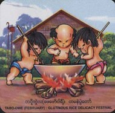

Festivals
- Horsemanship
- Htamaneipwe
- Sand Pagodas
- Thingyan
- Kason Nyaungyaltwinpwe
- Sar Pyan Pwe
- Wa So Pwe
- Sar Yale Tan Mal Pwe
- Hlay Pyaing pwe
- Mee Tun Pwe
- Ka Htain Pwe
- Sarsodaw
Months
- January
- February
- March
- April
- May
- June
- July
- August
- September
- October
- November
- December
|
Tabodwe (February)

Tabodwe is the 11th Myanmar month, very cool. in January and February. It is the time for seasonal festival of making Htamanei,
a food preparation of glutinous rice, oil fried coconut flakes and other condiments. It is prepared in huge pans by young
stalwarts in the community under the guidance of master chefs in communal activity. It was found to have started
in the latter part of Nyaung-Yan (second Inn-wa period). It is still in vogue at this time of the year today.
Often there are competitions in making Htamanei within communities. Another less known festival in Tabodwe is called
Mee-pon-pwe to mark the offering of fire for warmth in the extreme cold. It was known to have started in Bagan Period.
it is on the wane now, except in some rural areas.
|